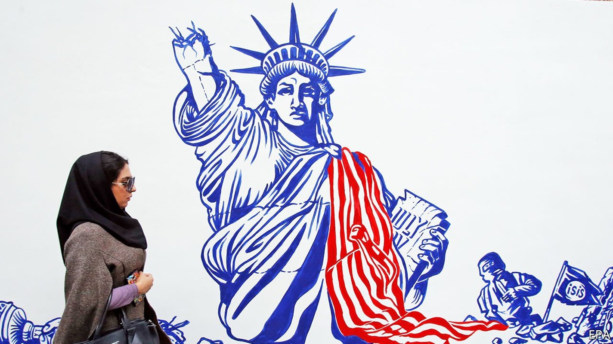

Donald Trump’s sanctions in the Middle East have had little effect
Four years of economic warfare against Iran and its allies have barely changed their behaviour

PERHAPS HE SHOULD have done a bit more shopping on his last trip to New York. Last autumn Gebran Bassil, the head of a Christian party in Lebanon, was his country’s foreign minister and aspired to be its next president. On a trip to America in September he visited West Point, a military college, where he decried the corruption that has bankrupted Lebanon. Mr Bassil may be unable to return—because America has blacklisted him for his own alleged corruption.
Listen to this story.Enjoy more audio and podcasts on iOS or Android.
Listen to this story
Save time by listening to our audio articles as you multitask
The sanctions announced on November 6th against Mr Bassil were Donald Trump’s highest-profile move against a Lebanese politician. Yet it is not clear what his administration hoped it would achieve, beyond complicating efforts to form a new Lebanese government in the aftermath of the huge explosion at Beirut’s port in August. Officials have offered contradictory rationales for the move, which illustrates the incoherence in America’s sanctions-heavy foreign policy.
In Mr Trump’s first three years the Treasury Department added an average of 1,070 names a year to its main sanctions list (see chart), compared with 533 under Barack Obama and 435 under George Bush. More than 20% of the 8,600 entries on the list are linked to Iran and the four Arab countries where it wields the most influence: Iraq, Lebanon, Syria and Yemen.
“Maximum pressure”, as Mr Trump calls it, has been a tactical success. In April Iran’s oil exports dipped as low as 70,000 barrels per day, compared with 2.5m two years before. (Exact numbers are elusive because much of Iran’s oil trade is now done in secret.) The rial, Iran’s currency, has lost 85% of its value. Yet economic pain has not brought political change. Sanctions have not compelled Iran to halt its support for militias nor convinced Bashar al-Assad, the Syrian dictator, to stop bombing his people. Sanctions may be an alluring tool for presidents. They are inexpensive, bloodless and largely up to executive discretion. But they often do not work.
Sanctions can be effective when they have broad international support, achievable demands and are targeted at firms and people that need to trade and travel. A multilateral embargo on Iran led to the deal in 2015 that restricted its nuclear programme. Sanctions on Rusal, a Russian aluminium giant, forced a Kremlin-backed oligarch to surrender control of the firm.
Mr Trump’s maximum-pressure campaign, however, fulfils none of these criteria. For a start, many of his sanctions are unilateral, and some have begun to fray. Iran’s oil exports have climbed from their nadir in April, perhaps to as high as 1m barrels a day this autumn, as some countries (particularly China) have defied American threats and snapped up discounted crude.
In its final weeks the administration is debating whether to label the Houthis, an Iranian-backed Shia militia in Yemen, as a terrorist organisation. Such designations are meant to cut off funding. But the Houthis have few legitimate sources of revenue to block, since most of their cash comes from smuggling and extortion in Yemen. Their leaders tend not to buy condos in Miami or invest in Wall Street.
If they would be no more than symbolic for the Houthis, sanctions could have consequences for other Yemenis. Some 80% of the country’s 30m people rely on aid. Since the Houthis control a large swathe of Yemen, aid agencies must deal with them to distribute food and health care. Sanctions would make this harder.
Mr Assad blames sanctions for the lack of progress in rebuilding his shattered country. It is a risible complaint: the main obstacle to foreign investment in Syria is a regime that bombs hospitals and gasses civilians. Still, sanctions undeniably have an effect. To escape the vice, Mr Assad must end attacks on civilians, release prisoners, and hold officials accountable for war crimes. Having won a battlefield victory against rebel groups, though, he is unlikely to agree—particularly to the last demand, which would require him to put members of his own regime in the dock.
Some diplomats argue that this is fine. “You break it, you buy it,” says one, insisting that the West should not help rebuild a country Mr Assad chose to destroy. But this means sanctions are strictly punitive: that economic pain is an end rather than a means. And Mr Trump has been selective about whom he chooses to punish. He refuses to impose legally mandated sanctions on Turkey, for example, because of its purchase of Russian missiles. Nor has he penalised allies with ghastly human-rights records, such as Egypt, which this month detained three prominent activists.
The sanctions on Mr Bassil are instructive. Few Lebanese were upset about the decision. Seen as haughty and entitled—his father-in-law is the president—Mr Bassil was a butt of popular anger during mass protests last year. The American charge sheet against him cites allegations of corruption from his time as energy minister. (He denies them.)
Yet he is hardly the only Lebanese politician accused of graft; looting the state is a policy on which the leaders of most of Lebanon’s factions agree. To date America has gone only after officials linked to Hizbullah, the Shia militia-cum-political party. A top official dismisses talk of imposing sanctions on “our guys”. Dorothy Shea, America’s ambassador to Lebanon, says Mr Bassil offered to “break with Hizbullah, on certain conditions”. The subtext seemed to be that corrupt politicians are only problematic if they pick the wrong partners.
Defenders of Mr Trump’s policy insist that it simply needs more time to work, an argument that is impossible to disprove. Mr Trump leaves office with Iran’s influence undiminished and its nuclear programme accelerated. Sanctions can be a useful foreign-policy tool. But they cannot be the only one. ■